运行时改造的 UE6 游戏 × 生成式视频 · 实验记录
假设(用户提出):把相机拉近、让飞船占满画幅,图像编辑模型会更好地保住外形——02 篇里源帧的船只占画面中部一小块,编辑模型对小主体的形状信号本来就弱。
本轮素材:05 篇 v7 新结构的 3.35s 视频首帧(相机偏移按 K=0.42 拉近,船占画幅 ~80%,全参数侧车 v7_clip.json 齐备)。
四个模型、统一构图锁定 prompt(02 的公平性教训)、Seedream 修正 round-1 的 harness 错误(image_size="auto")。FLUX.2 维持出局(输入审查×枪)。
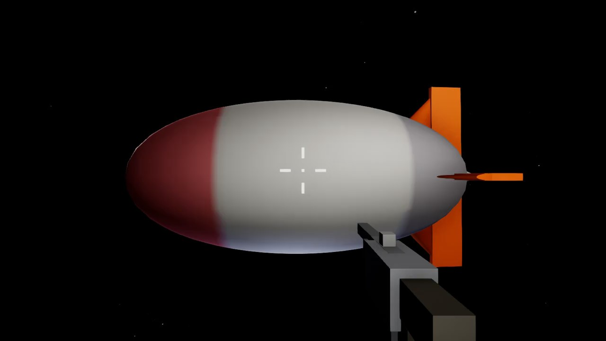
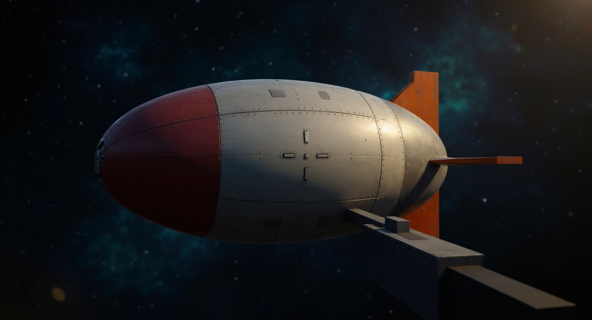
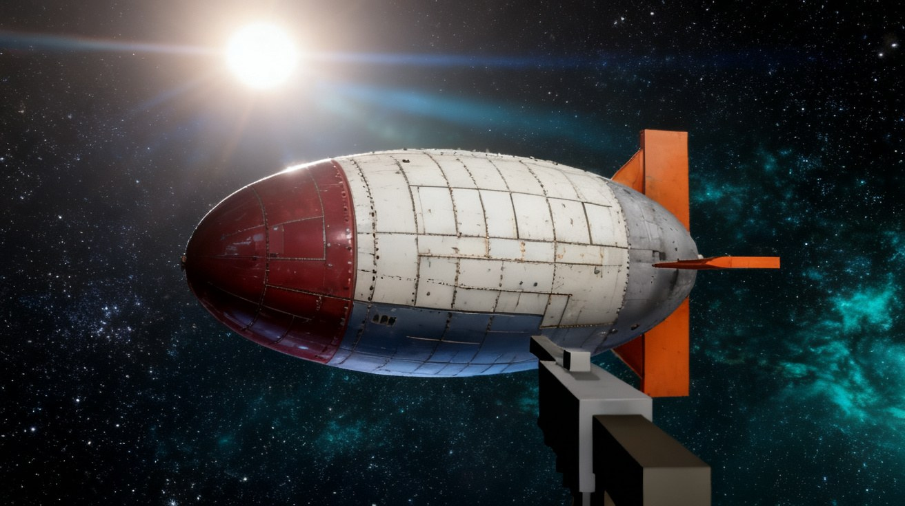
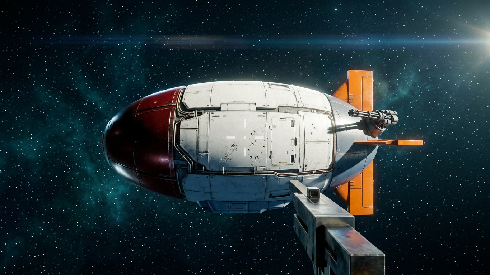
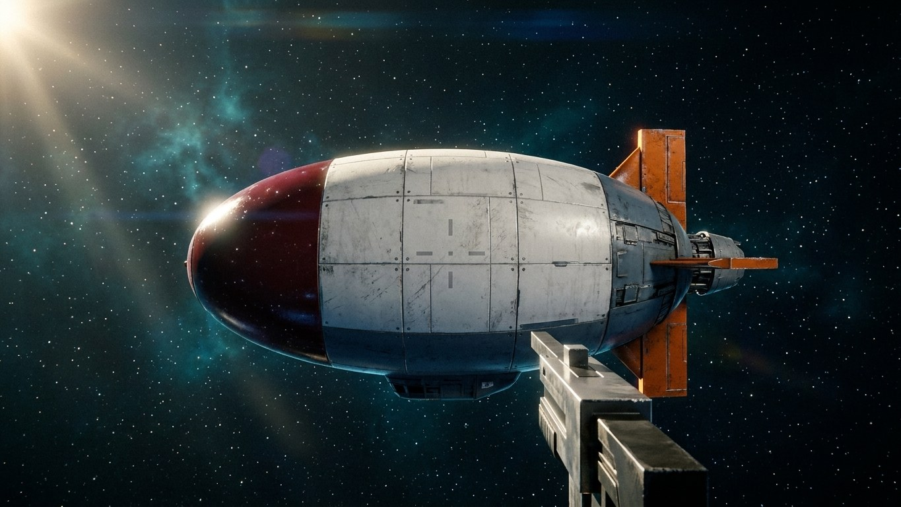
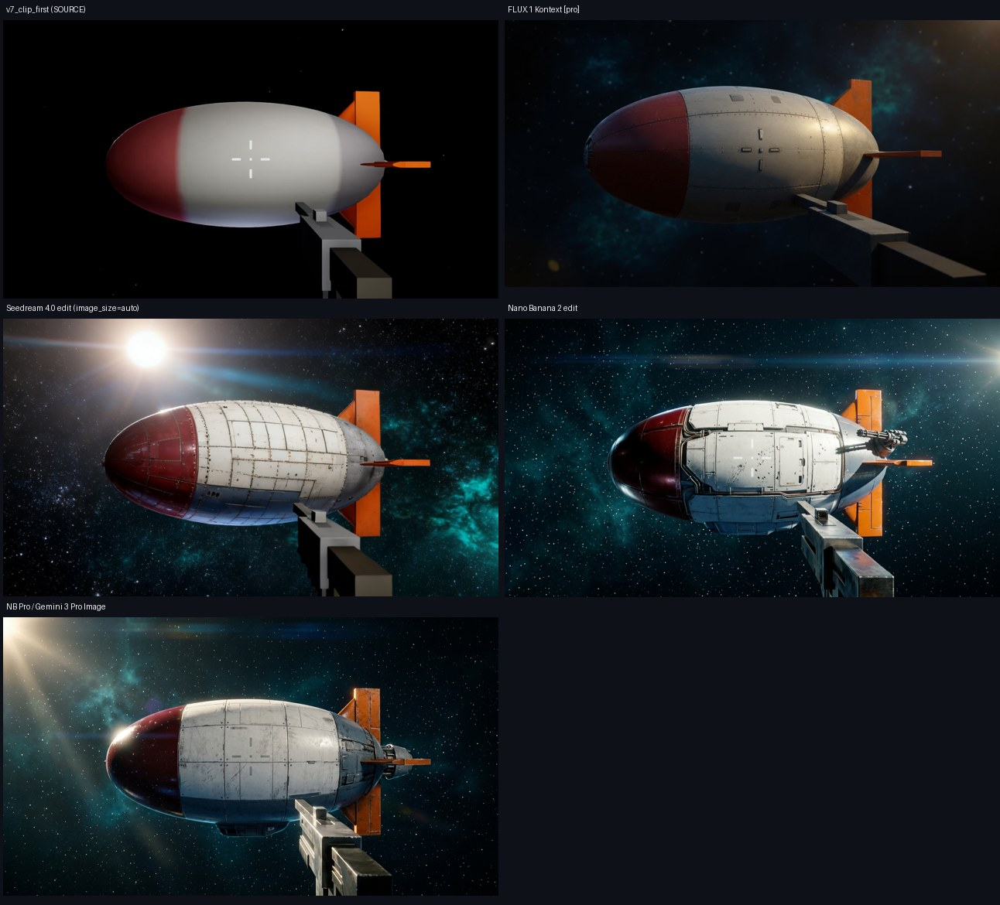
方法同 04 篇:分割船体轮廓(静态枪区掩码)→ 凸包椭圆拟合 → 与源帧比中心漂移、尺寸比、纵横比。全部归一到 1280 宽。源帧纵横比 2.44。
| 模型 | 中心漂移(px) | 尺寸比 | 纵横比(源 2.44) | 一句话 |
|---|---|---|---|---|
| FLUX.1 Kontext | 82(最稳) | 0.89 | 3.09(拉瘦) | 位置尺寸最忠实,但把船削细了 |
| Seedream 4.0 | 216 | 1.28 | 2.43(精确) | 比例完美复刻,整体偏移放大;鳍/尾锥/枪保留最全 |
| Nano Banana 2 | 186 | 1.23 | 2.43(精确) | 本轮不再压短增壮(02 篇的老毛病),纹理最电影 |
| NB Pro / Gemini | 268 | 1.41 | 2.55 | 漂移和放大都最大,还加了俯仰倾角 |
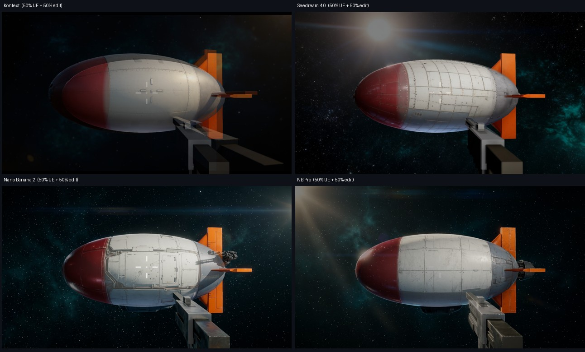
看这张 50/50 叠加时我最初的结论是"Kontext 几乎单船重合、其余三家两艘船"——看反了,用户当场指出。 陷阱:Kontext 的输出色调平、对比度低,和 UE 源帧混合后重影不显眼;另外三家是高对比写实纹理,任何偏移都显成双边缘。 肉眼在混合图里看到的"重影强度"测的是纹理对比度,不是几何偏移——仪器会说谎,50/50 混合就是会说谎的仪器。
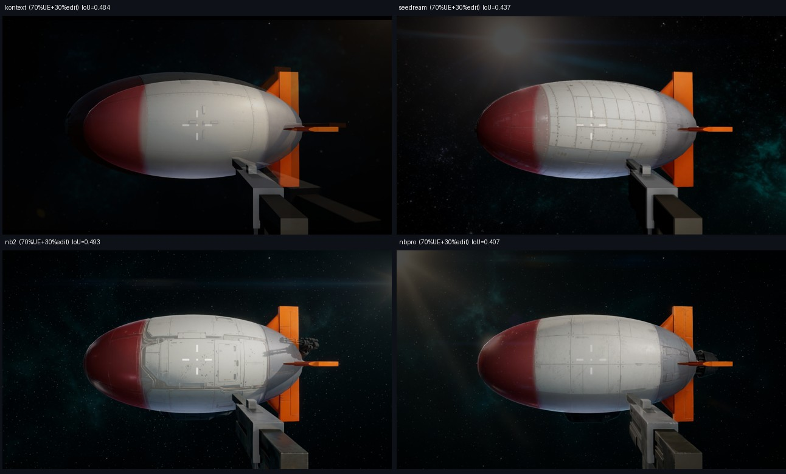
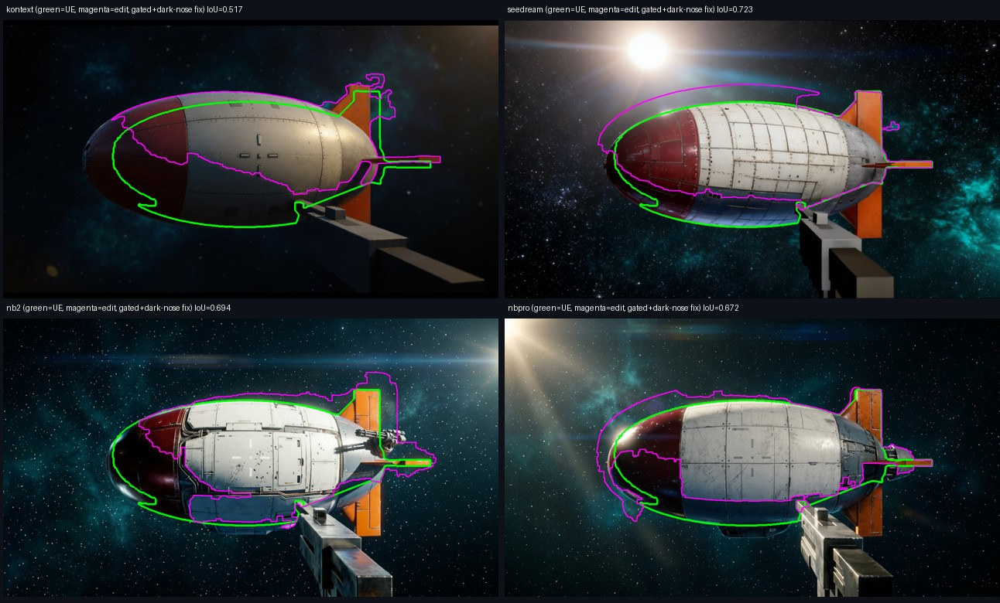
| 模型 | 轮廓 IoU(干净版) | UE 被覆盖 | 编辑船在 UE 内 |
|---|---|---|---|
| Seedream 4.0 | 0.723 | 0.83 | 0.85 |
| Nano Banana 2 | 0.694 | 0.79 | 0.85 |
| NB Pro / Gemini | 0.672 | 0.77 | 0.84 |
| FLUX.1 Kontext | 0.517* | 0.58 | 0.82 |
*Kontext 的暗红鼻分割仍有残缺,真实值可能略高,但其船体上抬、变瘦、鼻部前伸在轮廓图里肉眼可见,排名不受影响。 此前基于椭圆拟合的"Kontext 位移最小"分数与第一版 IoU 均被分割污染(星云并入/暗鼻丢失),以本表为准。 选型再次翻案:@Image1 用 Seedream——IoU 最高、比例逐位复刻、鳍/尾锥/枪保留最全,且它就是本轮最便宜的($0.03)。
用户接着指出:v2 的轮廓线本身画得不对。反思成立——绿线根本不该来自阈值分割: v7_clip.json 里躺着全套真值(相机位姿+内参+椭球+鳍+尾锥解析几何),绿线应该解析投影; 紫线的阈值分割是为游戏平涂调的,切照片必然漏暗鼻、吞光晕。重做:绿 = 解析投影(先在 UE 源帧上贴合自检,仪器先校准再读数), 紫 = 以解析掩码为先验的 GrabCut(沿照片真实边缘收敛)。
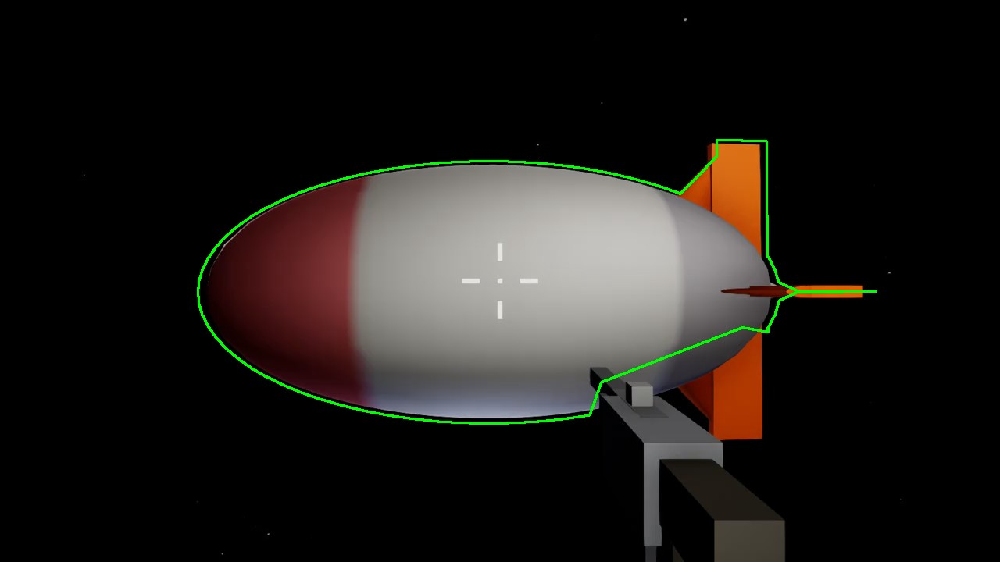
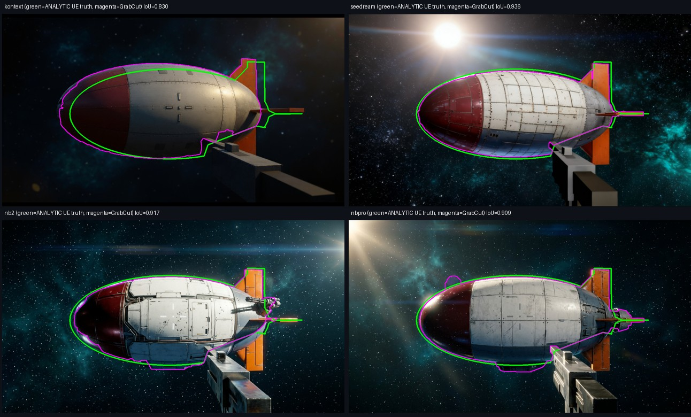
| 模型 | IoU(v3 终审) | UE 被覆盖 | 编辑船在真值内 |
|---|---|---|---|
| Seedream 4.0 | 0.936 | 0.94 | 0.99 |
| Nano Banana 2 | 0.917 | 0.94 | 0.97 |
| NB Pro / Gemini | 0.909 | 0.96 | 0.95 |
| FLUX.1 Kontext | 0.830 | 0.94 | 0.88 |
排名与 v2 一致(用户的肉眼判读两次都对),但绝对值大幅上修:四家其实都把 UE 船盖住了 94-96%,差别在"多画了多少"——Kontext 外溢最多(12%)。 大主体假设的终审强度也随之上修:0.83-0.94 的 IoU,对比 02 小主体时代的 ×1.5 放大漂移,是质的变化。
02 篇小主体时代表性漂移是线性 ×1.5+ 的放大;本轮尺寸比收敛到 0.89–1.41,且 Seedream 与 NB2 的纵横比做到了逐位复刻(2.43 vs 2.44)——比例信息这次真的传过去了。 注意口径:船体/prompt/涂装与 02 不同代,单样本,分割受光晕干扰,是方向性证据不是终审。终审在下一步:拿 v7_clip + Seedream 版参考图走 Seedance,用 04 的重建管线对比新旧两代的几何保持率。
NB Pro 的计费 key 索引又漂了(上轮 key#5,本轮 key#7 才通)——Google 侧 key 状态会变,调用要带全量轮询兜底。Seedream 的 image_size="auto" 本轮生效,输出 1312×736 原生宽幅,round-1 的方图确认是 harness 传参问题,不是模型问题。